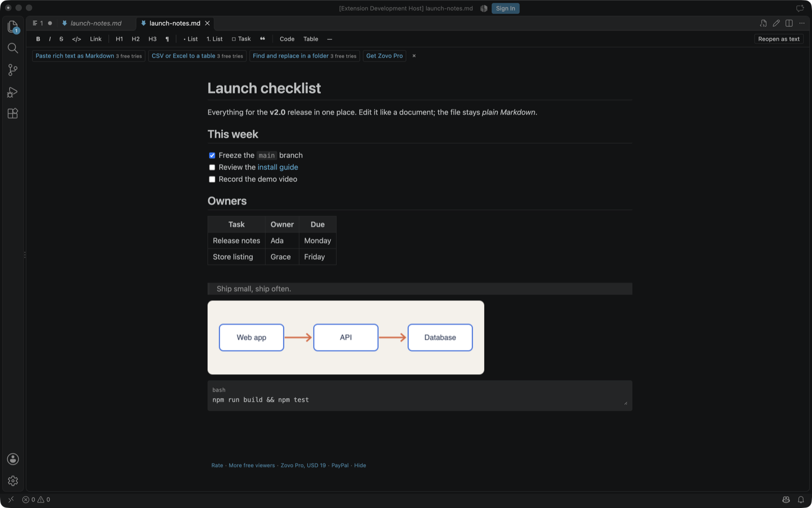

Open files in VS Code and Cursor / Docs and diagrams
Edit a Markdown file as rich text in VS Code
Markdown Editor & Rich Text opens a .md file in VS Code as rich text: headings, bold and italic, links, bulleted, numbered and task lists, tables you edit in place, code blocks and inline images. Only the paragraph, list or table you change is rewritten. Everything you do not touch stays byte-identical, so Git diffs stay small. All of that is free, with no account and no network requests. Zovo Pro (USD 19 once) adds rich-text paste as Markdown, CSV or Excel to a table, and find and replace across a folder of Markdown files, with 3 free tries each.
Free, MIT license. Extension ID zovo.zovo-markdown-editor, version 0.1.1. Needs VS Code 1.82.0 or newer.

Steps in VS Code
- Install Markdown Editor & Rich Text from the Marketplace, or press Ctrl+P (Cmd+P on macOS) and run
ext install zovo.zovo-markdown-editor. - Right-click a
.mdor.markdownfile in the Explorer and pick Open in Markdown Editor & Rich Text, or click the pencil button in the title bar of an open Markdown file. The normal Markdown editor stays the default. - Write as in a document. Use the toolbar or the usual keys: Ctrl+B, Ctrl+I and Ctrl+K (Cmd on macOS) for bold, italic and links.
- In lists, Enter adds an item and Tab indents. Click a task box to tick it.
- In a table, edit cells in place, add or remove rows and columns, or filter the rows while you read.
- Paste a screenshot and it is saved next to the file with a relative link. Save, Undo, Redo and Git diffs work as with any text file. "Reopen as Text" switches back to the normal editor.
Where Zovo Pro saves time
Rich-text editing of headings, lists, tasks, tables, code blocks, quotes and images, screenshot paste, and Reopen as Text are free, with no limits, no account and no network requests. There is no trial timer and no license banner.
When you copy from a word processor, an email or a web page, Paste Rich Text as Markdown turns it into Markdown with its headings, nested lists, tables, links, bold and italic, and without the styles and layout markup. The other two Pro tools are CSV or Excel to a Table, which puts a CSV, TSV or .xlsx file into the document as an aligned Markdown table (and sorts any table by a column), and Find and Replace in a Folder, for text or a regular expression across every Markdown file of a folder, with a preview of each change before it is made.
With Paste Rich Text as Markdown (Zovo Pro)
- Copy the text in your word processor, email or browser.
- In the rich-text editor, click "Paste rich text as Markdown" in the Pro row above the document, or right-click the file in the Explorer and pick "Zovo Pro: Paste rich text as Markdown".
- Paste with Ctrl+V (Cmd+V on macOS). The text arrives as Markdown at the cursor.
Paste Rich Text as Markdown works 3 times on your computer before it asks for a license, and a try counts only when you get a result. Opening a file shows no popup and no countdown.
Zovo Pro costs USD 19 once. It is not a subscription, and it turns on the Pro tools in every Zovo extension, not only Markdown Editor & Rich Text. After a card payment (Stripe) your license key shows on the next page. In VS Code, run "Zovo Pro: Enter Zovo Pro license key" from the Command Palette and paste it. The key is checked on your computer, with no network call. With GitHub Sponsors, pick the "$19 one time" tier, then run "Zovo Pro: I already paid: unlock with GitHub Sponsors" and sign in with the same GitHub account. With PayPal, send USD 19 with "Zovo Pro" in the note and the key comes by email within a day.
A team of 5: USD 59 once, by card or by PayPal. Every rule and every Pro tool is on the Zovo Pro page.
Steps in Cursor, Windsurf or VSCodium
- Open the Extensions view with Ctrl+Shift+X (Cmd+Shift+X on macOS).
- Search for
zovo.zovo-markdown-editorand click Install. Cursor, Windsurf and VSCodium install from Open VSX, where it is published aszovo/zovo-markdown-editor. - If your editor has no gallery, download the .vsix from the Open VSX page and run "Extensions: Install from VSIX...".
- Then use it the same way as in VS Code.
What Markdown Editor & Rich Text handles
- Front matter, HTML, footnotes, link references and anything unusual stay as editable Markdown source in place, never rewritten.
- Emphasis keeps the marker you used (
*or_,**or__), and links keep their original target text. - Images from the file's folder show inline. Images from the web load only if you turn on
zovoMd.remoteImages. - Undo, redo, save, hot exit and Git diffs, as with any text file.
What it does not do
- Lists with multi-line items or nested blocks, and quotes that contain lists or headings, open as Markdown source.
- Setext headings (underlined with === or ---) stay setext. A level change writes an ATX heading.
- Editing a table rewrites that table with aligned columns.
- A link's address is edited in source mode, or by selecting the text and pressing Ctrl+K again. Files over 8 MB are best edited with Reopen as Text.
Other options
- Markdown Editor (
zaaack.markdown-editor, 236,239 installs, on Open VSX). Its own description: "A full-featured WYSIWYG editor for markdown." - The built-in preview. VS Code shows a Markdown preview beside the text (Ctrl+K V), read-only. You still edit the source on the left.
Install counts and Open VSX status were checked on 12 November 2026. Descriptions in quotes are the extensions' own.
Questions
Can VS Code edit Markdown as rich text without an extension?
No. VS Code edits the Markdown source and shows a read-only preview beside it.
Will it reformat my whole file?
No. Only the block you change is rewritten. A block opens as rich text only when the editor can write it back exactly as it was, otherwise it opens as Markdown source in place.
Is it the default editor for .md files?
No. The normal editor stays the default. Open a file here from the Explorer menu or the pencil button, and switch back with Reopen as Text.
Does it work in Cursor or Windsurf?
Yes. Cursor, Windsurf and VSCodium install extensions from Open VSX. Search for the extension in their Extensions view and install it there.
More about Markdown Editor & Rich Text
Read the Markdown Editor & Rich Text page for every feature and setting, or the source code on GitHub.
Related guides
- Preview a reStructuredText (.rst) file in VS Code
- Read an RTF file in VS Code
- Preview Mermaid diagrams in VS Code
- Preview an SVG file in VS Code
Zovo Pro and support
Zovo Pro: USD 19 once, every Zovo viewer. It turns on the Pro tools in this extension and in the other Zovo extensions you use. The free features stay free.
After a card payment your license key shows on the next page. Paste it with the command "Zovo Pro: Enter a key".
You can also support the work with no Pro:
Need your format supported?
Open a format request with a sample file, and I reply there whether it can be done. For USD 299 once, through this GitHub Sponsors tier, I add your file format or a missing feature to this extension, with tests, within 7 days.